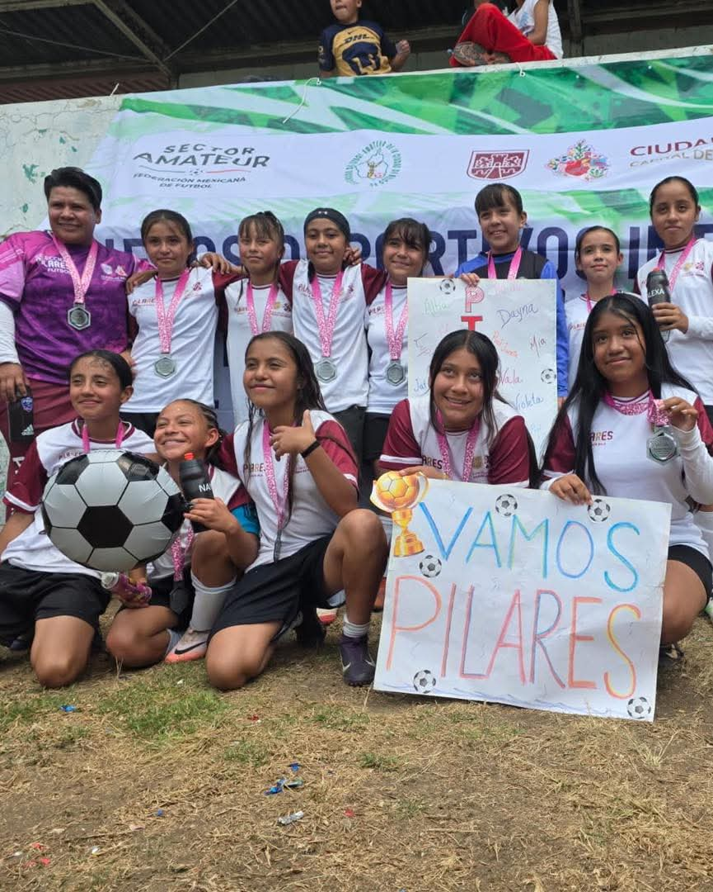

En un ambiente de entusiasmo y deportivismo, se llevó a cabo la clase de fútbol en PILARES CDMX dentro de las instalaciones del Palacio de los Deportes en el Velódromo. Este evento buscó integrar a los ciudadanos a través del deporte, preparando el terreno para la gran fiesta del Mundial 2026 que se celebrará en México, Estados Unidos y Canadá.
Durante la jornada, los participantes disfrutaron de entrenamientos dinámicos y dinámicas grupales que resaltaron el talento local y la disciplina física. La sede del Velódromo se transformó en un espacio de convivencia donde familias y jóvenes compartieron su pasión por el balón, fortaleciendo los lazos sociales y la identidad comunitaria en la capital.
La organización del evento hizo hincapié en que este tipo de iniciativas son fundamentales para proyectar una imagen de unidad y paz de cara a la justa internacional. Al finalizar las actividades, se entregaron reconocimientos y medallas, simbolizando el esfuerzo de cada asistente y la importancia de mantenerse activos dentro de los programas deportivos gratuitos de la ciudad.

Con esta exitosa clase de fútbol, PILARES CDMX reafirma su compromiso con el desarrollo integral de la comunidad y la promoción de un estilo de vida saludable. La meta es clara: llegar al 2026 con una sociedad más unida, participativa y orgullosa de sus raíces futbolísticas, demostrando que el deporte es el mejor aliado de la convivencia.